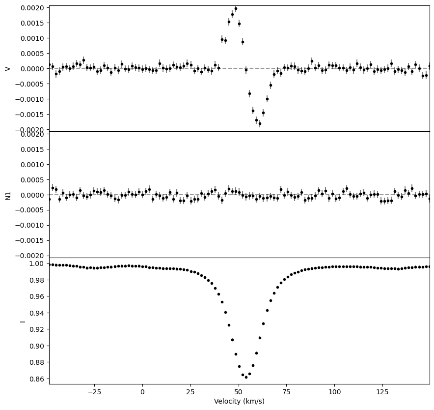

Sonifying LSD profiles
This tutorial provides information and example on the use of the sonifycation of LSD profile data.
[2]:
import astronify as snd
import specpolFlow as pol
from astropy.table import Table
import numpy as np
WxPython is not found for the current python version.
Pyo will use a minimal GUI toolkit written with Tkinter (if available).
This toolkit has limited functionnalities and is no more
maintained or updated. If you want to use all of pyo's
GUI features, you should install WxPython, available here:
http://www.wxpython.org/
loading specpolFlow package
[52]:
def sono_lsd(lsd):
'''
Creates a sonification of a LSD profile object.
'''
# The astronify package requires astropy tables.
#data_table_I = Table({"vel":lsd.vel, "Stokes":lsd.specI})
#data_table_N1 = Table({"vel":lsd.vel, "Stokes":lsd.specN1})
#data_table_V = Table({"vel":lsd.vel, "Stokes":lsd.specV})
sigmaN = np.std(lsd.specN1) # The stdev of N1:
maxV = np.max(np.abs(lsd.specV)) # The max of V
# We clip the sound range at either 5 times the deviation of N
# (in the case where StokesV is not detected)
# or to the max value of Stokes V
clip = np.max([5*sigmaN, maxV])
data_table = Table({"vel":lsd.vel, "Stokes":lsd.specI})
data_soni = snd.series.SoniSeries(data_table, time_col='vel', val_col='Stokes')
data_soni.note_spacing = 0.02
data_soni.pitch_mapper.pitch_map_args["zero_point"] = 1.0
data_soni.pitch_mapper.pitch_map_args['minmax_value'] = [0.5, 1.5]
data_soni.pitch_mapper.pitch_map_args['pitch_range'] = [100, 700]
data_soni.pitch_mapper.pitch_map_args['center_pitch'] = 400
data_soni.sonify()
data_soni.play()
data_soni.write('I.wav')
for i, Stokes in enumerate([lsd.specN1, lsd.specV]):
data_table = Table({"vel":lsd.vel, "Stokes":Stokes})
data_soni = snd.series.SoniSeries(data_table, time_col='vel', val_col='Stokes')
data_soni.note_spacing = 0.02
data_soni.pitch_mapper.pitch_map_args["zero_point"] = 0.0
data_soni.pitch_mapper.pitch_map_args['minmax_value'] = [-1*clip, clip]
data_soni.pitch_mapper.pitch_map_args['pitch_range'] = [100, 700]
data_soni.pitch_mapper.pitch_map_args['center_pitch'] = 400
data_soni.sonify()
data_soni.play()
if i==0:
data_soni.write('N1.wav')
else:
data_soni.write('V.wav')
return(data_soni)
[56]:
lsd = pol.iolsd.read_lsd('SampleData/SampleLSD.s')
lsd = lsd[np.logical_and(lsd.vel>-50,lsd.vel<150)]
#lsd.specV = lsd.specN1
fig, ax = lsd.plot()
data_soni = sono_lsd(lsd)
#data_soni.sonify()
#data_soni.play()
#data_soni.write('N1.wav')
Pyo warning: Portaudio input device `MacBook Air Microphone` has fewer channels (1) than requested (2).
Pyo warning: Portmidi warning: no midi device found!
Portmidi closed.
Pyo message: Offline Server rendering file I.wav dur=2.700000
Pyo message: Offline Server rendering finished.
Pyo warning: Portaudio input device `MacBook Air Microphone` has fewer channels (1) than requested (2).
Pyo warning: Portmidi warning: no midi device found!
Portmidi closed.
Pyo message: Offline Server rendering file N1.wav dur=2.700000
Pyo message: Offline Server rendering finished.
Pyo warning: Portaudio input device `MacBook Air Microphone` has fewer channels (1) than requested (2).
Pyo warning: Portmidi warning: no midi device found!
Portmidi closed.
Pyo message: Offline Server rendering file V.wav dur=2.700000
Pyo message: Offline Server rendering finished.

The Kernel crashed while executing code in the the current cell or a previous cell. Please review the code in the cell(s) to identify a possible cause of the failure. Click <a href='https://aka.ms/vscodeJupyterKernelCrash'>here</a> for more info. View Jupyter <a href='command:jupyter.viewOutput'>log</a> for further details.
[29]:
a = [1,2,3,4]
b = [5,6,7,8]
for c in [a,b]:
print(c)
[1, 2, 3, 4]
[5, 6, 7, 8]
[ ]: